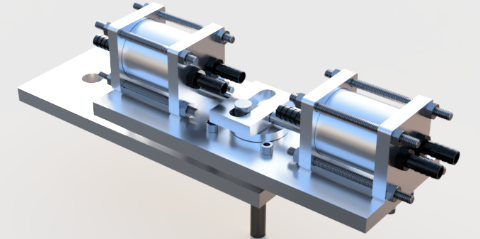
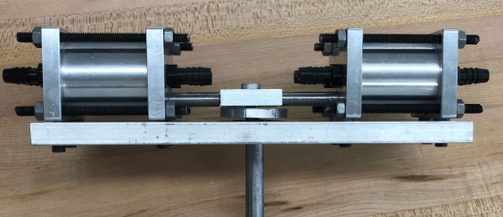

Goal
This project aims at creating a double-acting reciprocating water pump from scratch. The pump will be tested and the output volumetric flow rate of the pump will be recorded.
Process
First the pump was designed in Fusion 360. A bill of materials was constructed and parts were ordered from McMaster Carr and/or machined by hand using a lathe and/or a mill. The parts were then assembled and the pump was tested.
Highlights
Our pump achieved the highest volumetric flow rate of all the pumps in the class, achieving a rate of approximately 2.5 L/min.


Overview
The following was a group project in a mechanical synthesis class where each team developed (from scratch) a water pump of their choice. We were responsible for orderring and/or manufacturing the parts for the pump under a specific budget. Each pump was tested at the end of the semester and there was a competition to determine which pump was able to achieve the highest volumetric output.
Design
We decided stuck with devleoping a piston pump becasue of its ability to handle high pressures and high flow rates. In order to maximize our output with a piston pump we used a double actingacting reciprocating piston pump, meaning pumping is performed on both the forward and backwards strokes, effectively doubling the flow output compared to a single piston pump. The motion of the pumps is as follows below. For more infromation on the structure of the pump, see our project writeup also attattched below.
Water Pump Final Writeup
Anna Boese, Alexandra Quiana, Matthew Bryan, Jacobo Ospina, Mario Xerri